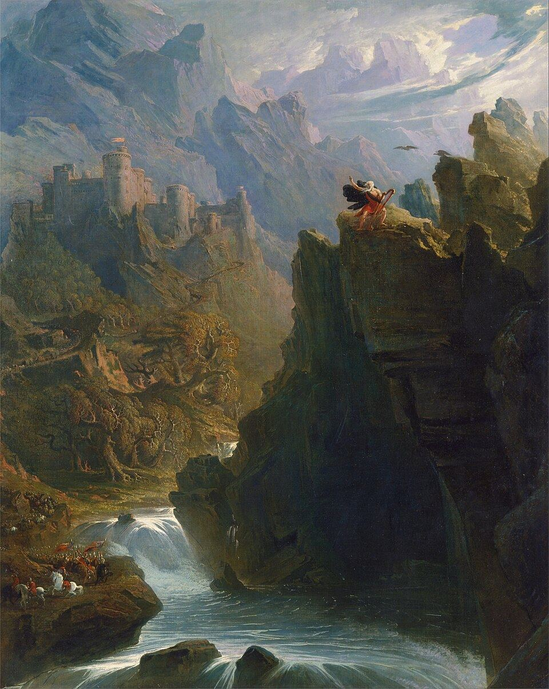

Les héros de notre campagne, tels qu'ils sont à la dernière séance : fiche complète, sorts, aide-mémoire de combat et histoire. Cette partie du site est la nôtre ; les règles sont dans les autres pages.